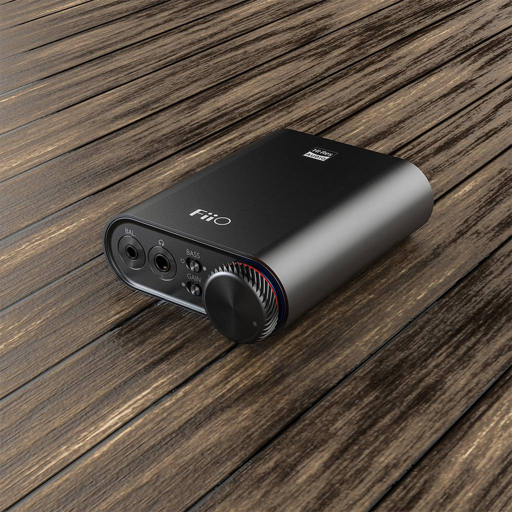
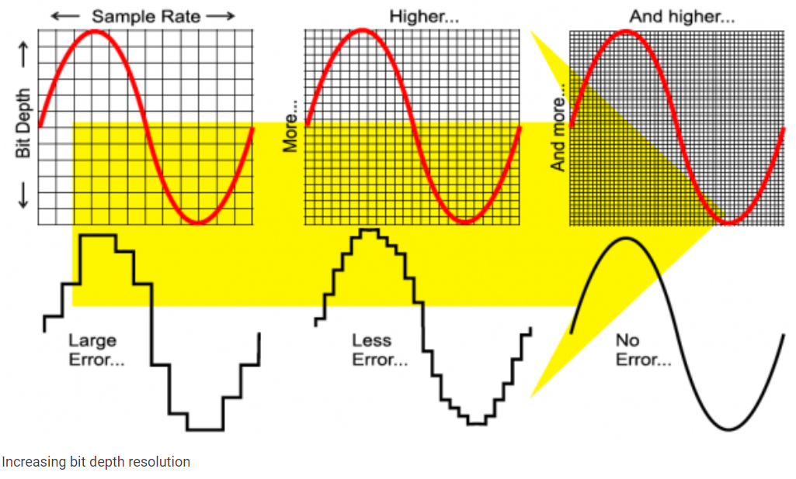
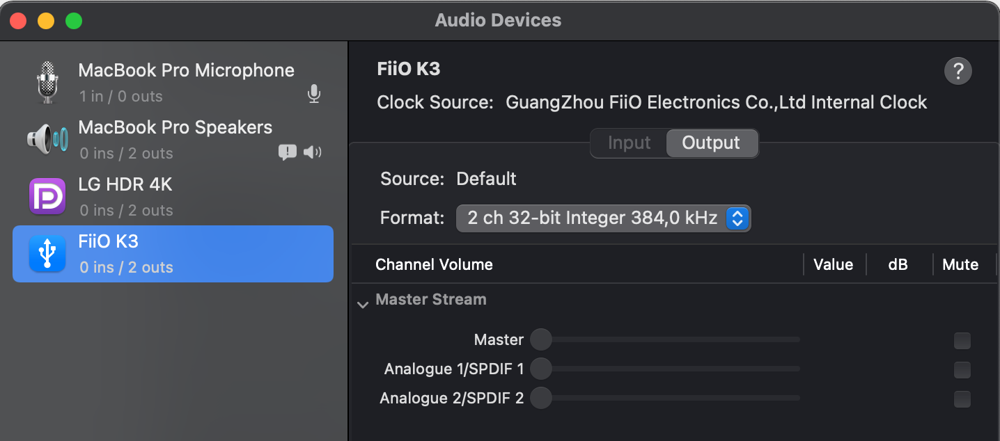

As a software developer music has proven an essential aid. From keeping me awake during late night stints to a gentle ushering in the background when focus is called for. I have enjoyed streaming my music through the years and always believed that I was at the pinnacle of my desktop musical experience with my high-quality Sennheiser HD 440. But most recently I was truly awakened to the fact that there was much more to pursue not by way of accessories but in audio quality. I had been streaming music at 44kHz while out there was a world of Hi-Res audio and even Master (studio quality). Let me explain.
Audio at 44kHz
44kHz or 44,100Hz is a common sampling frequency for analog audio, dating back to the late 1970's in recording digital audio on video cassettes. CDs in fact were made at 44.1kHz/16bit. Sampling or the sample rate is the number of samples in one second. A small sample rate or interval, results in a high sample rate which results in better quality sound file but then also increases the size of that audio file. This sampling of the sound wave is then converted into digestible binary data. So stated differently, 44,100Hz is basically 44,100 samples per second.
The second part to the sampling is the audio bit depth at which that sampling can take place. Given analog audio is a continuous wave, it has effectively infinite number of possible amplitude values. However to sample, we would need to define a finite set of values for these amplitude values. These values are our audio bit depth. The more depth we have the less errors we are likely to have. A larger depth allows for more possible values at a set length (interval).
- 16-bit: 65,536 values
- 32-bit: 4,294,967,296 values

Stated differently, amplitude describes depth, and sample rate the length or interval.
Audio at Hi-Res
So why does this matter? Well depending on the sample rate and depth, you could be listening to music that is flat, less lively, perhaps even lacking depth. Most streaming services today are providing you music at a depth of 16-bit with an interval of 44.1kHZ. However there is a growing trend today towards Hi-res audio which is 24-bit/96kHz or 24-bit/192kHz. This more closely replicates the sound quality of musicians and engineers at their studios.
Now is 16-bit/44.kHz terrible? Of course not. We all enjoy it. But if you looking at improving your existing experience and you are a lover of music then it might be something worth endeavouring towards.
Requirements
But in order to listen to Hi-Res a few things will be required.
Firstly you will need a streaming provider that supports Hi-Res or Master quality. Secondly, you will need a digital to analogue converter - this is because those largely provided by your PC or laptop are not specialized and of poor quality (including Apple hardware). Thirdly you will need a decent pair of head phones with sufficient impedance to deliver the quality stream to your ears. Lastly you will need to instruct your operating system to your new required sample rate.
My Setup
I spent a significant amount of time and effort trying to put together a working system of streaming provider, hardware and software setup and so please feel free to leverage it or get better. The intent and drivers behind this setup was for me spend as little money as possible and enter the space to prove the quality of Hi-Res.
- Streaming Service: Tidal
- DAC + Pre-Amp: Fiio K3
- Headphones: BeyerDynamic DT990 Pro
Snags
No USB connector
The MacBook Pro I was using only supported 4 USB Type C. The Fiio K3 comes with USB 2.0 support and supporting cable. There was a possibility for me to connect it to my USB powered hub but that would have compromised on the audio quality, and so I purchased a USB 2.0 cable (USBC male to USBC male 1.5 metre) for a direct connection to the laptop.
Be warned that all cables are not equal, and you are specifically looking for a Type-C cable that supports USB 2.0.
How to configure sample rate and interval on MacBook
The beauty to the Fiio K3 is that there is a light on the volume dial that let's you know when you are sampling at Hi-Res or Master quality. And by default this does not happen at the OS level unless you instruct it. The trick is go into OS-X's Audio Midi Setup and to forcibly set the Fiio format as per below.

Lastly...
So is this worth it? Can you actually tell the difference? Yes and yes. I listen to classical musical and I am able to stop and take in the large forray of instruments as they are played. The sound is warm, crisp, compartmentalized to each instrument and just simply another level.
But then as a developer when I am working away furiously and in focus mode, my ability to distinguish between 44kHz and 384kHz is little to none.
Perhaps you not yet convinced, and rightly so, but the setup I've provided might just be cost-effective enough for you to give it a shot.